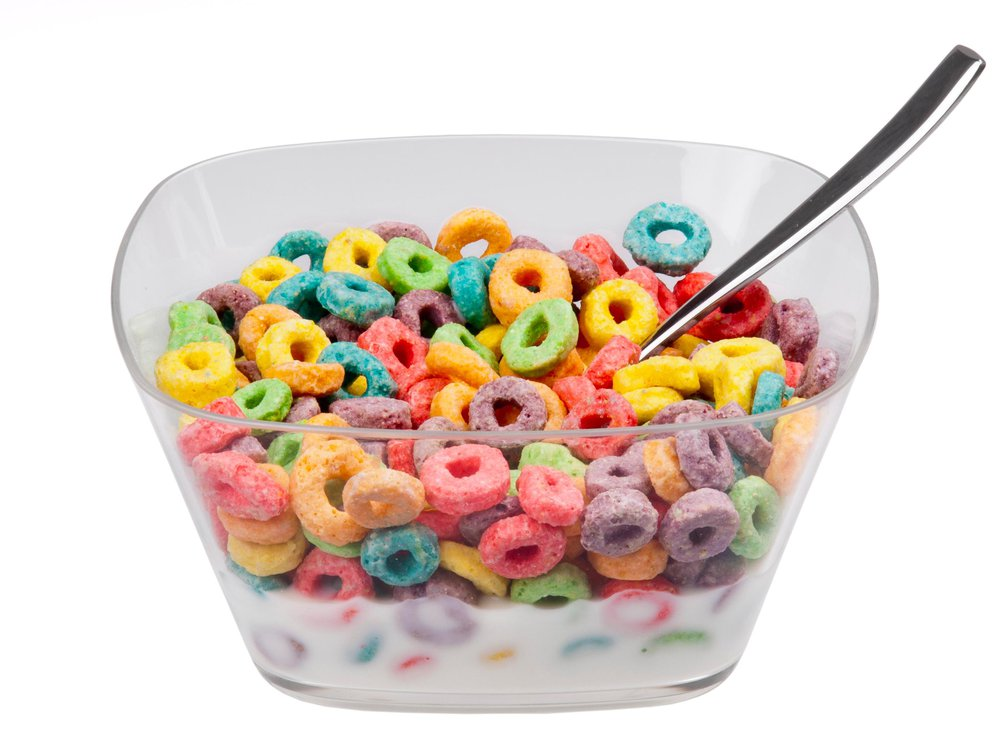

Cereal

What is cereal?
cereal is a traditional breakfast food comprised of processed pieces of grains served in a bowl of milk. it's not bad but i dont relaly eati it anymre
Ingredients
- cereal
- milk
- bowl and spoon
Method
- put the cereal into a bowl
- pour in milk to just below the top of the cereal
- eat it